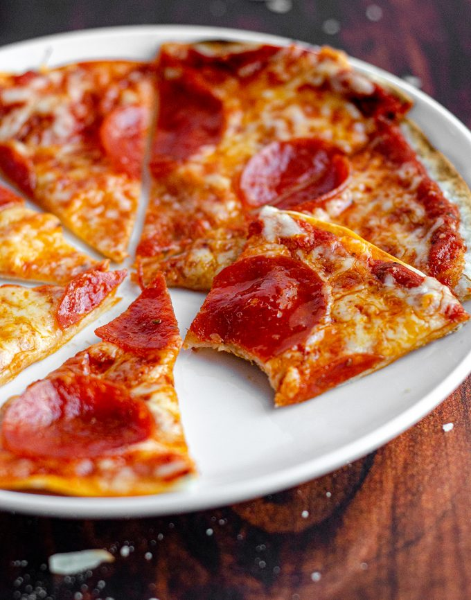

Tortilla Pizza

Description
Tortilla pizza? Pizza on tortillas? Yes! Tortilla pizzas could be the next big thing in the pizza world, fusing together Mexican-style tortillas with classic Italian toppings!
Ingredients
- 1 (8 ounce) can tomato sauce
- ½ cup shredded Parmesan cheese
- ½ cup shredded mozzarella cheese
- ½ cup shredded sharp Cheddar cheese
- 1 clove garlic, minced
- 2 (10 inch) flour tortillas
- 4 slices salami
Directions
- Preheat oven to 400 degrees F (200 degrees C).
- Mix tomato sauce, Parmesan cheese, mozzarella cheese, Cheddar cheese, garlic, rosemary, basil, red pepper flakes, oregano, salt, and pepper together in a bowl.
- Lay tortillas onto a baking sheet; top with tomato sauce mixture. Arrange 2 salami slices into each pizza.
- Bake in the preheated oven until cheese is golden brown, 9 to 12 minutes.